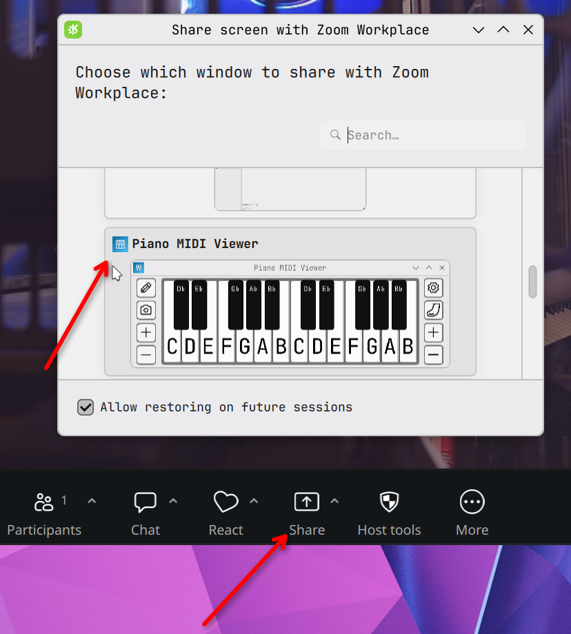
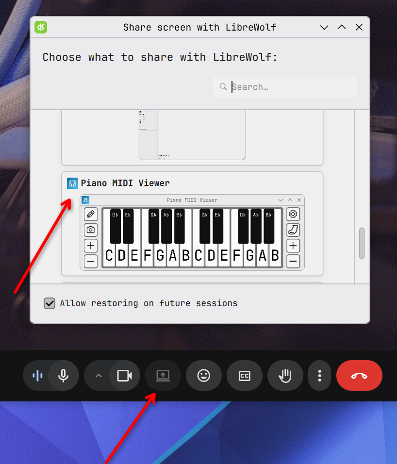
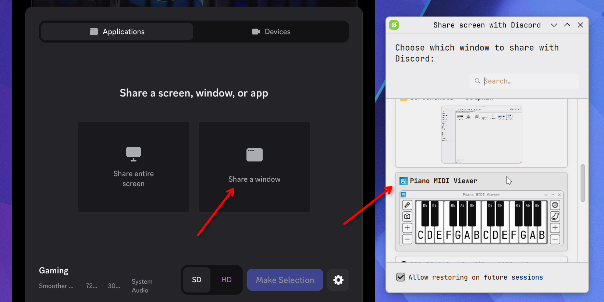
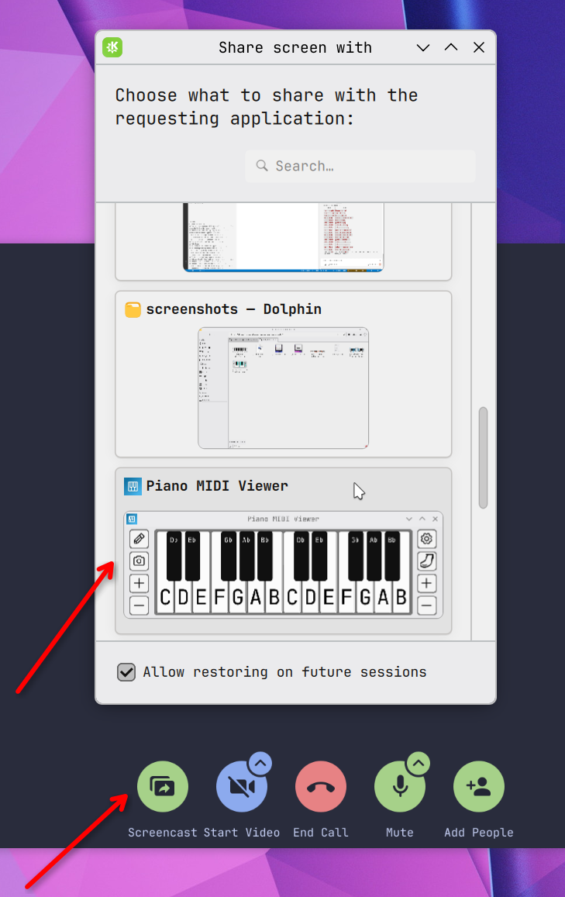
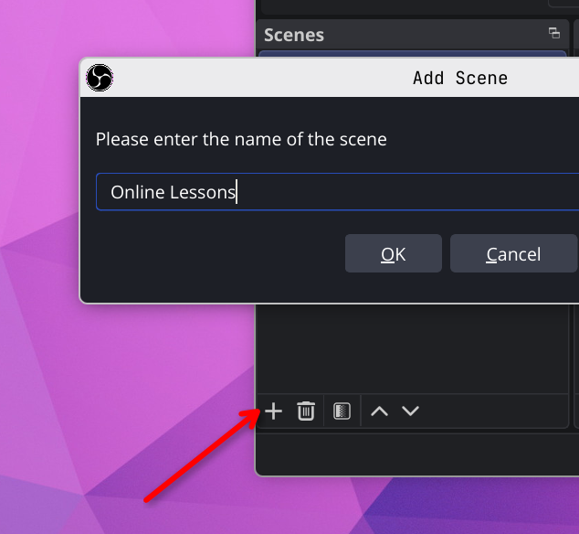
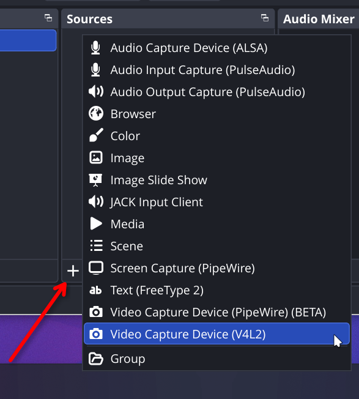
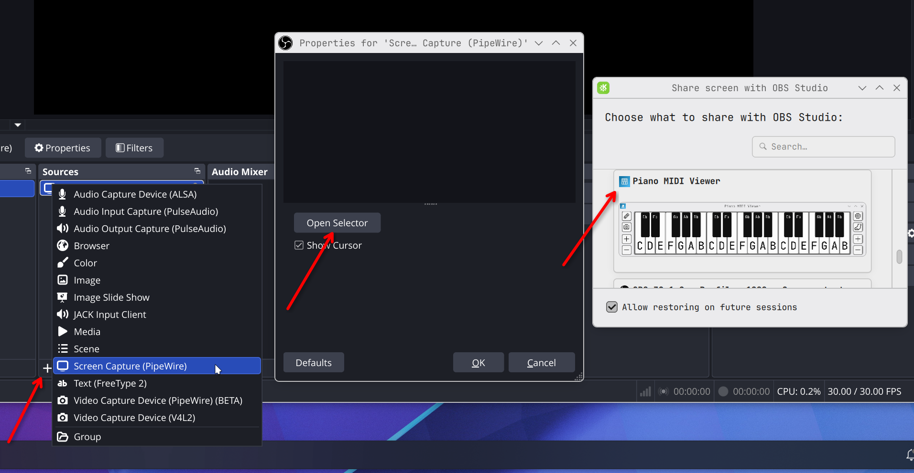
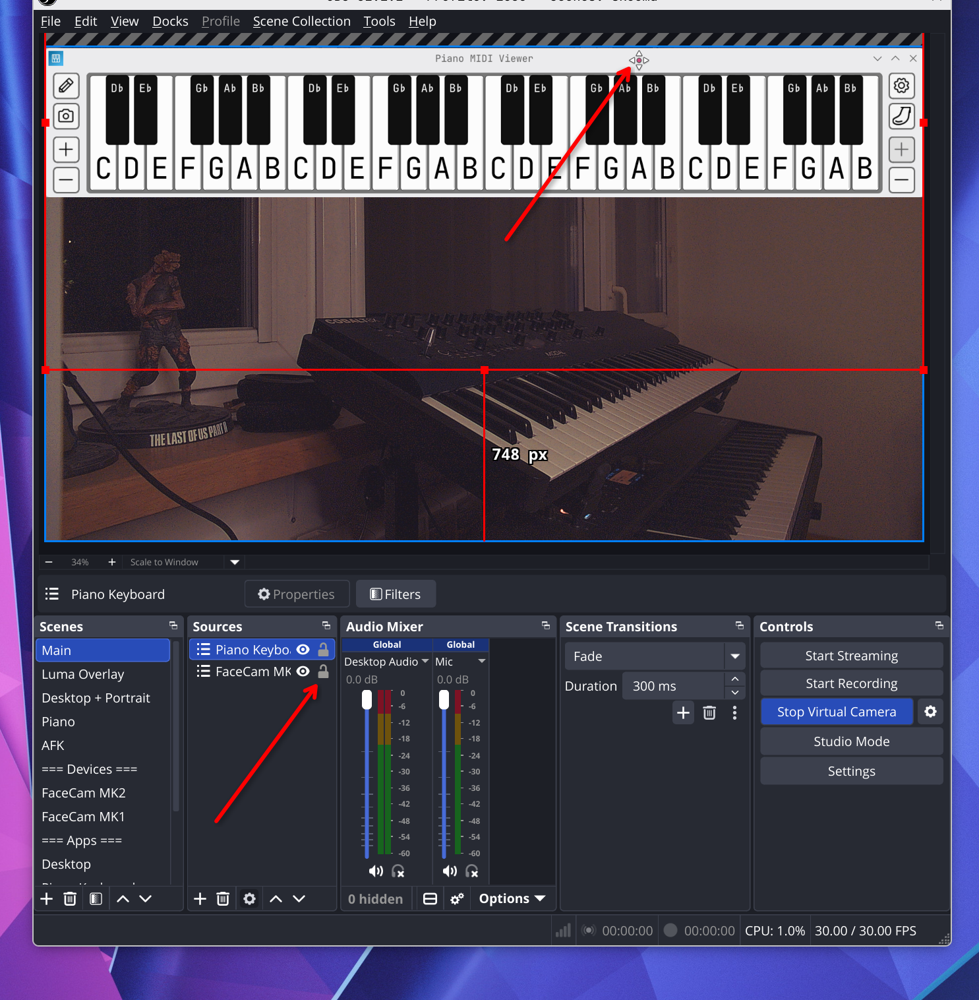
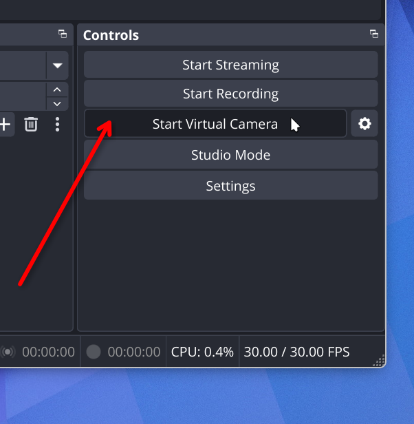
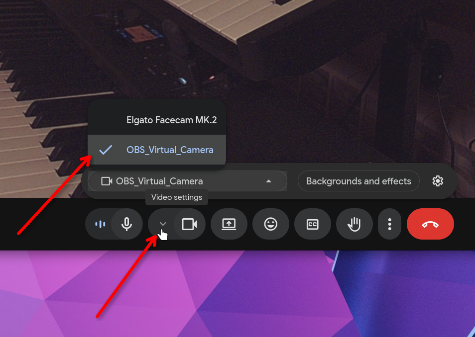

Most video call apps have everything you need built in
Look for a Share button in your video call app, pick the Piano MIDI Viewer window, and your student sees the piano while your webcam stays on. Here's how it works in the most common apps.
Screenshots taken on a Linux computer — your apps may look slightly different.




Don't see your app? The steps are almost the same everywhere — look for a Share Screen or Present button, choose a window, and pick Piano MIDI Viewer. If your app doesn't support window sharing, use Option 2 below.
Works with any video call app — takes about 5 minutes to set up, then it's one click
OBS is a free, open source app that combines your webcam and Piano MIDI Viewer into one video feed and sends it to any call app as a virtual camera. It also works for recording lessons and YouTube videos.
Go to obsproject.com and download OBS Studio. Install it like any other app and skip the auto-configuration wizard if it appears.
When OBS opens, you'll see three panels at the bottom: Scenes, Sources, and Controls. That's all you need.
In the Scenes panel, click + and name it something like "Online Lessons".

In Sources, click + → Video Capture Device. Name it, pick your camera from the dropdown, and click OK. You should see yourself in the preview.

In Sources, click + → Window Capture (on some systems it may not be listed — try Screen Capture or Display Capture instead). Pick Piano MIDI Viewer from the list — the piano keyboard should appear in the preview.
Make sure Piano MIDI Viewer is already open, or it won't show up in the list.

Click a source in the preview to select it, drag to move, drag the corners to resize. The source listed higher in Sources appears on top. Use the eye icon to temporarily hide a source during a lesson.

In Controls (bottom right), click Start Virtual Camera. Your call app will now see OBS as a regular webcam.

In your call app's camera settings, select OBS Virtual Camera. Your student sees your webcam and piano combined, exactly as it looks in OBS.
